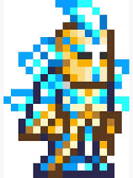
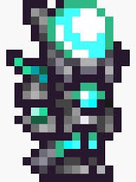
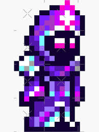
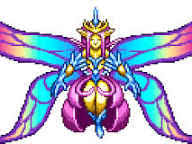

Terrariano
O Terrariano é o protagonista de Terraria, responsável por eliminar o mal do mundo de Terraria.

O Terrariano é o protagonista de Terraria, responsável por eliminar o mal do mundo de Terraria.
| Classes | Armas | Armadura |
|---|---|---|
| Guerreiro | Espadas,Ioiô | .jpg) |
| Sumonador | Chicotes,Sumons |  |
| Atirador | Armas de Fogo,Arcos |  |
| Mago | Tomos,Cajados |  |



Feito por Pedro Almeida | 2º Informática